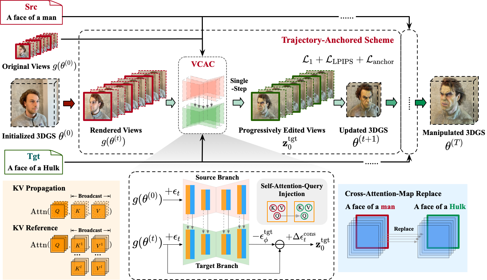

Despite significant strides in the field of 3D scene editing, current methods encounter substantial challenge, particularly in preserving 3D consistency in multiview editing process. To tackle this challenge, we propose a progressive 3D editing strategy that ensures multi-view consistency via a Trajectory-Anchored Scheme (TAS) with a dual-branch editing mechanism. Specifically, TAS facilitates a tightly coupled iterative process between 2D view editing and 3D updating, preventing error accumulation yielded from text-to-image process. Additionally, we explore the relationship between optimization-based methods and reconstruction-based methods, offering a unified perspective for selecting superior design choice, supporting the rationale behind the designed TAS. We further present a tuning-free View-Consistent Attention Control (VCAC) module that leverages cross-view semantic and geometric reference from the source branch to yield aligned views from the target branch during the editing of 2D views. To validate the effectiveness of our method, we analyze 2D examples to demonstrate the improved consistency with the VCAC module. Further extensive quantitative and qualitative results in text-guided 3D scene editing indicate that our method achieves superior editing quality compared to state-of-the-art methods. Our code will be available at this url.

Illustration of the proposed method, Trajectory-Anchored Multi-View Editing for 3D Gaussian Splatting Manipulation (TrAME). Our method comprises a Trajectory Anchored Scheme (TAS) as well as a View-Consistent Attention Control (VCAC) module. Given a source prompt, a target prompt and the original 3DGS θ(0) as input, the VCAC module can yield 3D-consistent and progressively edited views with a single-step inference to update 3DGS. Conversely, the views rendered from the updated 3DGS correct minor inconsistencies from previous view edits and serve as inputs for subsequent steps, thereby preventing error accumulation from the 2D editing process. This process alternatively update the 2D views and 3DGS in a synchronized and progressive manner, producing the final edited 3DGS θ(T).
For comparison with the baseline methods, please refer to our paper.
Original
"Einstein"
"Modigliani style"
"Young man"
"Robot"
"Spider-Man"
"Ironman"
"Elf"
"Hulk"
"Vincent Van Gogh style"
@article{luo2024trame, title={TrAME: Trajectory-Anchored Multi-View Editing for Text-Guided 3D Gaussian Splatting Manipulation}, author={Luo, Chaofan and Di, Donglin and Ma, Yongjia and Xue, Zhou and Wei, Chen and Yang, Xun and Liu, Yebin}, journal={arXiv preprint arXiv:2407.02034}, year={2024} }